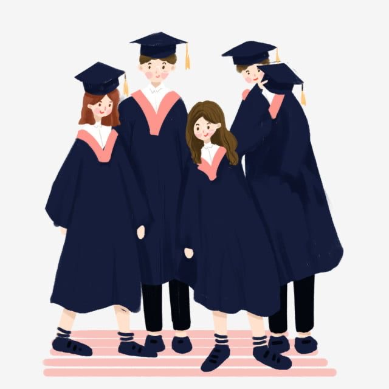

Year 1
Year 3
_____- ๐ -____________________- ๐ -____________________
- ๐ -
- ๐ -
Year 2
Year 4
Year 1
Year 3
_____- ๐ -____________________- ๐ -____________________
- ๐ -
- ๐ -
Year 2
Year 4
ปี 1 จะเป็นการเรียนวิชาทั่วไปผสมกับวิชาคณะที่เป็นเรื่องพื้นฐาน
ถ้าทำความเข้าใจในเรื่องที่เรียนมากกว่าการจำจะเป็นประโยชน์มากกว่า
พยายามส่งงานให้ทัน และทบทวนเรื่องที่เรียนอยู่เสมอ อย่าไปอ่านที่เดียวช่วงใกล้สอบ คิดว่าปี 1
น่าจะเก็บเกรดได้ง่ายที่สุด พยายามเข้าร่วมกิจกรรมต่างๆ และลองทำอะไรที่ไม่เคยทำ
สิ่งสำคัญคือ ต้องแบ่งเวลาให้ดี และมีการวางแผนล่วงหน้า
ถ้าเริ่มตั้งแต่ตอนนี้อนาคตจะได้ไม่ต้องมากังวลมากนัก
เป็นปีที่มีแต่วิชาคณะเป็นส่วนใหญ่ ควรหาเวลาว่างฝึกการเขียนโปรแกรมเพิ่มเติมนอกจากที่เรียนในห้องเรียน จะได้เป็นการทบทวนและพัฒนา Skill ของเรา และฝึกภาษาอังกฤษให้ดีกว่าเดิม เพราะสำคัญมากในสายงานนี้ หาความรู้เพิ่มเติมเกี่ยวกับสายงานว่าตนเองสนใจในด้านไหน และเรียนรู้เรื่องการเงินควบคู่ไปเหมือนเดิม ถ้ามีเรื่องไม่เข้าใจให้หาคำตอบเลยอย่าปล่อยไว้นาน
ปี 3 น่าจะเรียนวิชาเอกแล้ว และก็อาจจะรู้แล้วว่าถนัดสายงานด้านไหน คาดว่าน่าจะเรียนครบทุกตัวในปี
3
เทอม 2 เพราะตั้งใจอยากจะฝึกสหกิจศึกษาในภาคฤดูร้อน
ถึงจะมีโควตาจำกัดจำนวนคน จะได้หรือไม่ได้อย่างน้อยก็ถือว่าได้ลองทำแล้ว ทำให้เต็มที่ก็พอ
และอัพเดตเรื่องใหม่ๆอยู่เสมอ
โดยเฉพาะสายงานที่สนใจ
------------------------
ปี 4 เทอม 1 จะลงสหกิจที่เหลืออีก 1 ตัว คาดว่าน่าจะเป็นตัวสุดท้ายสำหรับการเรียนจบหลักสูตร CSTU เนื่องจากวางแผนว่าจะจบ 3.5 ปี แต่ถ้าจบ 4 ปี ตามปกติดก็ไม่ติดอะไร และอยากไปฝึกงานกับบริษัทที่ชอบ และตำแหน่งที่อยากจะทำหลังเรียนจบ เพราะจะได้เป็นการเรียนรู้สายงานที่อยากทำไปด้วยเลย
